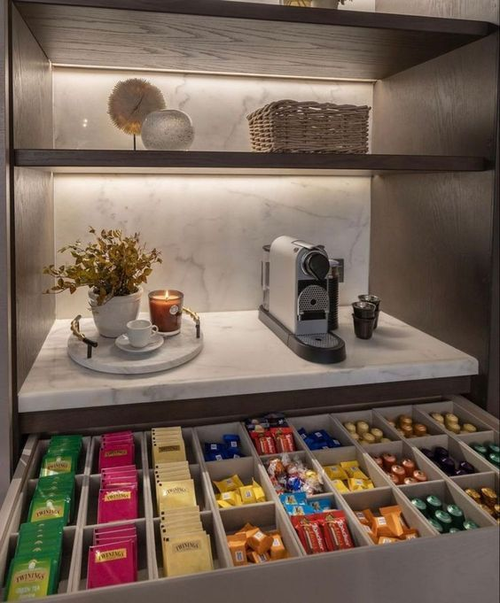

Coffee Recipe

Description
Ingredients
- 1 tbsp Nestle sweetened condensed milk
- 3/4 tbsp Instant Coffee
- 1 tbsp Coffee Mate
- 1/2 cup of water
Steps
- Pour the condensed milk into your cup (it should kinda barely cover the entire bottom of your cup)
- Bring 1/2 cup of water to a boil
- Add the coffee and coffee mate to your cup
- Pour a bit of water. Just enough enough to dissolve the stuff in the cup
- Pour boiling water in the cup.